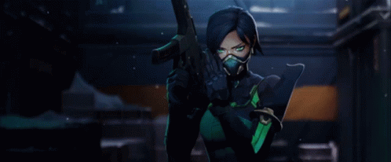
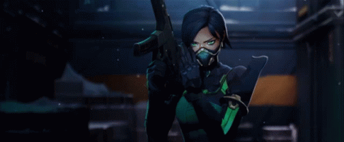

Los videojuegos de disparos, tiros o shooters conforman un género que engloba un amplio número de subgéneros que tienen la característica común de permitir controlar un personaje que, por norma general, dispone de un arma (mayoritariamente de fuego) que puede ser disparada a voluntad. Pertenecen al género de acción.
Caracteristicas
Hay varios criterios para determinar el tipo de un videojuego de disparos. A continuación se listan las principales características. Con base a ellas, es posible clasificar prácticamente todos los juegos de tiros desarrollados hasta la fecha:
Realismo.- Los juegos que hacen uso de elementos “realistas”, como pueden ser armas que existen en la realidad, o la simulación del daño del personaje, se suelen llamar videojuego de disparos tácticos. Aquellos que permiten más libertad respecto a escenarios, objetos, o la física del juego son conocidos como videojuego de disparos arcade. No hay una clara distinción entre ambos tipos, estando la mayoría de los videojuego de disparos en un abanico entre ambos.
Multijugador.- Esta es la característica principal (en los últimos tiempos) que hacen de este tipo de juegos más populares. Si el videojuego de disparos hace uso de internet, se puede catalogar en una serie de divisiones: Los juegos en equipo son aquellos en los que cada jugador es asignado a un equipo entre varios (2 o más) para conseguir un objetivo. Para ello, los jugadores participan en el mismo equipo pero cada uno tiene su puntuación. Los juegos cooperativos tienen a numerosos jugadores jugando en compañía para conseguir unos objetivos y puntuación conjuntos.
Tematica.- Es una manera opcional de clasificar un videojuego de disparos, pero en ocasiones es necesaria para distinguirlo. Un videojuego de disparos puede estar enfocado a la infiltración en lugar de la acción. Otros pueden tener elementos de terror.
 

Diseño del juego
Como la mayoría de juegos de disparos, los de primera persona incluyen un avatar, una o más armas a distancia y un número variable de enemigos. Debido a que tienen lugar en un entorno 3D, estos juegos tienden a ser más realistas que los juegos de disparos en 2D, y tienen representaciones más precisas de la gravedad, la iluminación, el sonido y las colisiones. Los tiradores en primera persona que se juegan en computadoras personales se controlan con una combinación de teclado y ratón. Este sistema ha sido calificado como superior al que se encuentra en los juegos de consola, que con frecuencia utilizan dos sticks analógicos: uno usado para correr y esquivar, el otro para mirar y apuntar. Es común mostrar las manos y el armamento del personaje en la vista principal, con una pantalla de visualización que muestra los detalles de salud, municiones y ubicación. A menudo, es posible superponer un mapa de los alrededores.

Tiendas de juegos Shoters
- Epic games
- Blizzard
- riod games
- steam